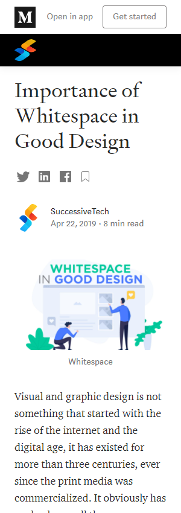
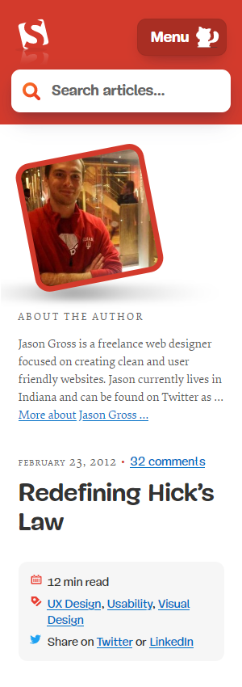
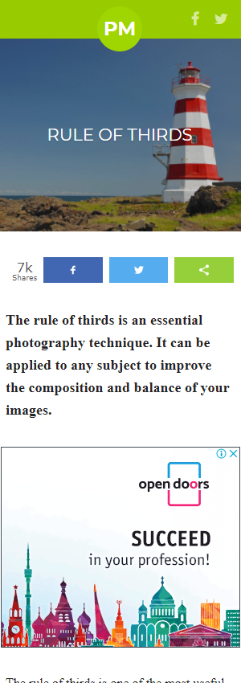

White Space and Clean Design
Orginization is Successive Technologies
Website Name
https://successive.tech/
In this website explained in-detail and clearly about white space and clean design. And, we can see the here title (typography), illustration, and body content are aligned properly like one by one.
Hicks Law
Orginization is Smashing Magazine
Website Name
https://www.smashingmagazine.com/
Hick’s Law has always been a popular reference point for designers. In this website, the user will open this website, eye-catchy to the user, and attention up at the top of the page. Also, here we can observe typography, alignment, selection of font-family, and color combinations used.
Rule of Thirds
Orginization is Photographymad
Website Name
https://www.photographymad.com/
It's an important concept to learn as it can be used in all types of photography to produce images that are more engaging and better balanced. Here we can see in the header image and title are overlapped, but user attention on the image.